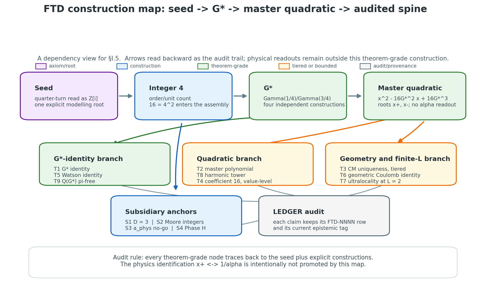

The Construction of the FTD Mathematics — From a Discrete Ontology to Its Provable Boundary
Tag: [SYNTHESIS] Date: 2026-06-02 Scope: Canonical bottom-up construction of FTD’s mathematics for an interdisciplinary / philosophy-of-physics readership; re-states existing canonical claims at their canonical tags; introduces no new mathematics.
Authorities this monograph summarizes (it adds nothing to them): TRACKER_ONTIC_TRUTH.md — bedrock truth tiers (T1–T5); SPEC_ALGEBRAIC_SPINE.md — the nine numbered results (seven theorem-grade); LEDGER.md — per-claim provenance (FTD-NNNN); SPEC_DOCTRINE_LEDGER.md — single-page status map. Where this document and any of those disagree on an epistemic tag, those documents are correct and this one has a bug — please file it.
How to read this monograph
This is a construction story. It builds FTD’s mathematics in the order a mathematician would build the number systems — each object from prior ones, each step independently checkable — and it asks one question at every step: does the discrete ontology force this, or not? (where “the discrete ontology” includes the one ℤ[i] modelling choice of §I.1). The answer comes with an epistemic tag, and the tag is the point. A reader from philosophy of physics is invited to scrutinize the tags first and the prose second; the tags are where the project’s honesty lives.
The monograph is organized around the project’s single governing goal, stated as two clauses:
Derive everything the discrete ontology forces — and rigorously establish the boundary of what it cannot force.
Both clauses are deliverables. Showing that the discrete ontology does not fix a quantity is as much a result of this program as showing that it does; a mapped boundary is not a failure but a finding.
Table of contents
Part 0 — The Seed (this section) - §0.1 — The discrete ontology - §0.2 — What a construction is - §0.3 — The epistemic contract - §0.4 — The two clauses: roadmap
Part I — The Constructive Reach — what the ontology forces; the theorem-grade spine. (this section) - §I.1 — The seed: i and ℤ[i] - §I.2 — G* constructed four ways of differing character - §I.3 — The master quadratic - §I.4 — The spine built on top - §I.5 — The construction map
Part II — The Boundary — what the ontology provably does not force; the climax — the discrete-limit-of-the-square-root wall around the electromagnetic coupling. (this section) - §II.1 — The readout problem - §II.2 — The four FTD-native routes - §II.3 — Route-invariance and the theorem-grade components - §II.4 — The square-root wall: K-BIND - §II.5 — The conditional theorem - §II.6 — Conclusion: α is dynamical, not structural
Part III — The Bridge — the physics match, quarantined at its honest tags. (this section) - §III.1 — The empirical match - §III.2 — The structural-uniqueness evidence (and its honest limit) - §III.3 — Retired and closed-negative (preserved for provenance) - §III.4 — What would close the gap - §III.5 — The honest physics scope
Coda — The map in both directions. (this section)
Part 0 — The Seed
Part 0 lays the foundation the rest of the monograph stands on: the discrete ontology FTD posits, the standard of “construction” the document holds itself to, the tag system the reader must internalize, and the two-clause roadmap that organizes everything that follows. It contains no physics theorem and no new mathematics; it is setup.
§0.1 — The discrete ontology
FTD posits a discrete substrate, fixed by five postulates. Each is an [AXIOM] — a structural commitment that defines the model and is not claimed to be derived from anything more primitive. A reader should accept them as the definition of the game, then ask what follows.
- Discrete space
[AXIOM]. The substrate is a three-dimensional cubic lattice with undefined boundary: at every specified position, the axis-adjacent sites exist. This is deliberately not a completed-infinity totality ℤ³ taken as a single finished object — it is a lattice with no defined edge and no claim of completeness. - Discrete time
[AXIOM]. Evolution proceeds in discrete ticks; there is no continuous time parameter at the substrate level. - Ternary states
[AXIOM]. Each site holds a states ∈ {−1, 0, +1}— the three values being the only states a site may take. - Local causality
[AXIOM]. Influence is local: each site interacts only within its 26-neighbour Moore neighbourhood, and information propagates at most one lattice unit per tick. - Determinism
[AXIOM]. The update rule is deterministic: the configuration at tickt+1is fixed by the configuration at tickt.
The two-layer ontology [AXIOM]. Riding on the lattice are two fields with distinct ontological roles:
- a flux field
J ∈ ℝ³— a continuous vector field at each site, encoding potential energy density. It is dispositional: it represents what the substrate is poised to do, not what it has manifested. - a state field
s ∈ {−1, 0, +1}— the discrete ternary value above. It is actual: it represents manifestation, what the substrate has resolved to.
The dispositional/actual distinction is structural to the framework and recurs throughout; the flux field carries the continuous content, the state field carries the discrete resolution.
Why the undefined boundary is load-bearing. The choice of an undefined-boundary lattice over a completed-infinity ℤ³ is not cosmetic; it narrows the framework’s admissible toolkit and is enforced corpus-wide. Concretely, statements of the form “in the limit L → ∞ …” are not well-posed under this ontology without an explicit ε–L restatement (e.g., “for every ε > 0 there exists L such that P(L) is within ε of its continuum counterpart”). Global integrals over “all sites,” completed thermodynamic limits, and path integrals over “all configurations” are likewise not primitive moves; arbitrarily large finite computations, explicitly bracketed, are. The full per-claim triage of which results survive unchanged, which need finitary restatement, and which need re-derivation is recorded in AUDIT_INFINITY_REFRAME.md. This commitment will matter precisely at the boundary in Part II, where the question “does the ontology force a particular limiting value?” turns on what limits the ontology is even entitled to take.
§0.2 — What a construction is
This monograph holds itself to a specific standard, and naming it up front is part of the contract with the reader.
A construction, in the sense used here, is the kind of thing the number systems are: ℕ → ℤ → ℚ → ℝ → ℂ. Each object is built explicitly from objects already in hand (ℤ as equivalence classes of pairs of naturals; ℚ as equivalence classes of pairs of integers; ℝ as cuts or Cauchy sequences; ℂ as ℝ²), and each construction step is independently checkable by a reader who accepts the prior stage. No object appears by fiat; none is assumed because it would be convenient. FTD’s mathematical core is presented in exactly this spirit — each result built from prior results and the axioms, with a stated proof or chain the reader can audit. The companion reference SPEC_MATH_FIRST_ONTOLOGY.md fixes the ordering this monograph follows: mathematical primitives → invariant structure → admissible readouts → operational physics, with physical language entering only at the last layer. The constructive Parts of this monograph (I and II) live primarily in the first two layers; the physics match is withheld until Part III; Part II names the physical target only to state precisely what is not forced.
Three categories must be kept strictly apart, because conflating them is the characteristic way a program of this kind overclaims:
- A derivation — tagged
[THEOREM]or[DERIVED]— is an explicit chain from the axioms or prior theorems that the document itself reproduces. The reader checks the chain.[DERIVED]is the honest grade when the chain is explicit but carries a non-trivial assumption;[THEOREM]when it does not. - A parametric insertion — tagged
[PARAMETRIC]— is a standard physics formula with FTD’s constants substituted in. The numbers may fit beautifully, but the mechanism is borrowed from outside the framework. This is a calibration input, not a derivation, and the monograph never calls it one. - A match — at its strongest tagged
[STRONGLY MOTIVATED CONJECTURE]— is a numerical coincidence between an FTD object and a physical quantity, possibly backed by uniqueness scans or sub-ppm agreement, but with no derivation chain. A match is evidence; it is not a derivation, and no amount of rhetorical momentum converts it into one.
The discipline of this document is to state, for every load-bearing claim, which of these three it is — and to let the weak ones stay weak.
§0.3 — The epistemic contract
The following tag system is the instrument the whole program is governed by. A reader should internalize it before proceeding; every substantive claim sentence in this monograph carries one of these tags, and the tag — not the surrounding prose — is the claim’s actual epistemic status.
| Tag | Meaning | Reviewer expectation |
|---|---|---|
[AXIOM] |
Structural postulate; not derivable. | Accept as model definition. |
[THEOREM] |
Rigorously proven from axioms (or from named classical theorems with explicit citation). | Check the proof. |
[DERIVED] |
Established by an explicit chain the document reproduces; weaker than [THEOREM] when the chain carries a non-trivial assumption. |
Check the chain; flag any smuggled axiom. |
[SELECTION] |
Argued from consistency or naturalness; not uniquely proven. | Critique the argument. |
[STRONGLY MOTIVATED CONJECTURE] |
A conjecture with substantial structural and/or empirical evidence (uniqueness scan, multi-route convergence, sub-ppm match) but no derivation chain. | Critique the evidence; expect an explicit Bayes / uniqueness / look-elsewhere argument. |
[CONJECTURE] |
Proposed interpretation requiring validation; weaker than the above (no structural-uniqueness backing). | Demand evidence. |
[PARAMETRIC] |
A standard physics formula filled with FTD constants; numbers fit, mechanism borrowed. | Treat as calibration input, not output. |
[CLOSED NEGATIVE] |
A hypothesis tested and falsified; preserved for provenance to prevent re-attempt. | Confirm the closure; cite it to prevent a zombie re-emergence. |
[SYNTHESIS] |
Cross-document integration of existing claims at their existing tags; not a new theorem. | Verify the component claims; check that nothing was silently promoted. |
The reading rule. The tags form a ladder, and the ladder has a direction:
Promotion up the ladder requires explicit justification. Demotion is free. Ambiguous cases default down.
A claim may be moved up (e.g., from [CONJECTURE] to [DERIVED]) only by exhibiting the chain or proof that warrants it. A claim may be moved down at any time, by anyone, for any defensible reason, with no ceremony. And where the correct tag is genuinely unclear, the convention is to assign the weaker tag until the stronger one is earned. This asymmetry is the safeguard against the program talking itself into believing its own conjectures.
This monograph is [SYNTHESIS], and it promotes nothing. Everything stated in the Parts that follow appears at the tag its canonical source assigns it. If a sentence here reads as stronger than its source, that is an error in this document, not a result of the project.
§0.4 — The two clauses: roadmap
The program’s governing goal has two clauses, and the architecture of this monograph is simply those two clauses made into sections, plus a quarantined bridge to physics.
Clause 1 — Derive everything the discrete ontology forces. Clause 2 — Rigorously establish the boundary of what it cannot force.
Clause 1 → Part I, the Constructive Reach. Part I exhibits what the five postulates force once their order-4 lattice symmetry is read as ℤ[i] (the single modelling [AXIOM] of §I.1): an algebraic spine of theorem-grade results — the constant G* = Γ(1/4)/Γ(3/4), the master quadratic x² − 16G*²x + 16G*³ = 0 and its roots, the arithmetic of the lemniscatic CM curve, and the finite combinatorics of the Moore neighbourhood. The canonical accounting (see SPEC_ALGEBRAIC_SPINE.md §0 and TRACKER_ONTIC_TRUTH.md) is nine numbered results, of which seven are theorem-grade and two are honestly tiered below theorem grade. These are the framework’s firm ground, independent of any physics interpretation, and Part I states each at its canonical tag.
Clause 2 → Part II, the Boundary — and this is the climax. Part II asks the sharp negative question: granted everything in Part I, does the discrete ontology force the electromagnetic coupling α? The honest answer, mapped across multiple independent attack routes, is no — not without an additional binding law. The boundary takes a concrete and memorable form: the reading that would fix α requires the substrate to natively realize the quantity √(G*(4G*−1)) — the discrete limit of a square root — as an operator-assembly the lattice produces on its own, and across every FTD-native route examined the lattice does not produce it; the determinant grading and the operator assembly (Tr, Det) = (16G*², 16G*³) are an imposed selection, not a forced consequence (canonical sources: AUDIT_ALPHA_OPERATOR_FORCING_ROUTE_INVARIANCE.md and AUDIT_RSI_LEG3_CONDITIONAL_THEOREM.md). Crucially, the boundary itself is built from theorem-grade parts: that the only obvious geometric realization is ruled out is a [THEOREM], that the equivariant rank-2 restriction cannot carry the required spectrum within its scope is a [THEOREM], and that the residual obligation is route-invariant (the same kernel reached in four different dialects, because Q(G*) is the Galois-fixed field of the master quadratic’s ℤ/2) is a [THEOREM]. What remains is a single, precisely-stated irreducible kernel, honestly tagged [OPEN]. Part II’s deliverable is therefore a mapped wall, with theorem-grade masonry and one clearly-marked gap — exactly the kind of boundary Clause 2 calls for.
The bridge → Part III, quarantined. The numerical match that motivates the whole enterprise — x₊ = 137.036…, agreeing with 1/α to 1.26 ppm — is real and is the strongest structural evidence the framework holds (a unique dual-matcher across millions of candidate polynomials over a basket FTD did not design). But it is a match: it carries the tag [STRONGLY MOTIVATED CONJECTURE] (the identification x₊ = 1/α is LEDGER FTD-0013), it is not a derivation, and Part III presents it as such — alongside the honestly [PARAMETRIC] physics insertions — with no promotion.
The central honest headline, stated up front. The discrete ontology, once its order-4 lattice symmetry is read as ℤ[i] (the single modelling [AXIOM] isolated in §I.1), forces a rich algebraic spine — seven theorem-grade results — and it provably does not force the electromagnetic coupling α without an additional binding law. Both halves are the deliverable. A program that only proved the first half would be a curiosity; a program that mapped the second half honestly is doing the harder and more useful thing — drawing, in both directions, the line of what discreteness reaches. The constant G* ≈ 2.95868 that anchors the spine is, throughout, the lemniscatic ratio Γ(1/4)/Γ(3/4); it is not the Bernoulli/Gauss lemniscate constant ϖ ≈ 2.62206, a distinct number with which it is never to be conflated.
Part I — The Constructive Reach
Part I answers Clause 1: what does the discrete ontology force? It exhibits the algebraic spine — the theorem-grade results the substrate produces — in the order a mathematician would build them, each object from prior ones, each step independently checkable. The construction runs i → ℤ[i] → G* → master quadratic → spine. It contains no physics identification: the famous numerical match x₊ = 1/α is a match, deferred to Part III, and Part I will say so at the one place it is tempting to overstep. Everything here is stated at its canonical tag from SPEC_ALGEBRAIC_SPINE.md and TRACKER_ONTIC_TRUTH.md; where this document and a source disagree on a tag, the source wins.
The canonical accounting, fixed in advance: the spine is nine numbered results, of which seven are theorem-grade and two are honestly tiered below theorem grade (the coefficient-16 identity, whose structural necessity is conjectural, and the Phase-J ultralocality, which is [THEOREM] only at L = 2). §I.4 closes by re-stating that count.
§I.1 — The seed: i and ℤ[i]
The construction begins with one structural choice and one group-theory fact, and it is worth separating them cleanly, because the honesty of everything downstream depends on not confusing the two.
The structural choice [AXIOM]. The substrate is the cubic lattice of Part 0. Its coordinate planes carry an order-4 rotational symmetry: a 90° rotation of the (x, y) plane sends (1, 0) ↦ (0, 1) ↦ (−1, 0) ↦ (0, −1) ↦ (1, 0), a cycle of length 4. FTD’s seed move is to read this order-4 planar symmetry as the arithmetic of the Gaussian integers ℤ[i] = {a + bi : a, b ∈ ℤ}, with the 90° rotation realized as multiplication by i. That the lattice’s quarter-turn should be read through ℤ[i] rather than through some other order-4 structure is a framework commitment — a modelling decision — not a theorem. It is the discrete-ontology analogue of choosing to build ℂ as ℝ[i]: natural, motivated, and a choice. We tag it [AXIOM] (a structural reading the framework posits) and flag it as such, so that no later [THEOREM] silently inherits the status of “forced” from a step that was actually “chosen.”
The group-theory facts [THEOREM]. Once ℤ[i] is the substrate’s arithmetic, the following are ordinary, checkable theorems of algebra, owing nothing further to FTD:
- The unit group of
ℤ[i]isℤ[i]^× = {1, i, −1, −i} ≅ ℤ/4, of order|ℤ[i]^×| = 4. (Proof:a + biis a unit iff its norma² + b² = 1, whose only integer solutions are(±1, 0)and(0, ±1).)[THEOREM] ℤ[i]is a Euclidean domain, hence a PID and a UFD; its primes split into the three Gauss classes — the ramified prime1 + i(norm 2), the split rational primesp ≡ 1 (mod 4), and the inert rational primesp ≡ 3 (mod 4)(Fermat’s two-square theorem).[THEOREM]
The single integer that this seed deposits into the rest of the construction is 4 = |ℤ[i]^×|. It reappears, squared, as the coefficient 16 of the master quadratic (§I.3), and the split/inert residue classes mod 4 reappear as the arithmetic content of one of the four G* constructions (§I.2). The discipline to hold here: 4 is a theorem about ℤ[i]; that the lattice is entitled to ℤ[i] in the first place is the [AXIOM].
§I.2 — G* constructed four ways of differing character
The bridge constant is
\[G^* \;=\; \frac{\Gamma(1/4)}{\Gamma(3/4)} \;=\; 2.95867511919\ldots\]
What earns G* its place at the centre of the spine is not any one definition but a convergence: four constructions of differing character — a Γ-ratio, a lattice Green’s-function period, a regularized determinant ratio, and a finite product — all converging on the same real number. (They are not mutually unrelated: the Watson value is itself a Γ(1/4)-period, and three of the four routes share the quarter-integer data; what is striking is the convergence across constructions of such different character.) A construction story should show the construction where it is cheap and cite where it is deep; the four routes below do exactly that.
Route 1 — the Γ-ratio [THEOREM] (OT-1.2). Directly from the definition and the Euler reflection formula,
\[\Gamma(1/4)\,\Gamma(3/4) \;=\; \frac{\pi}{\sin(\pi/4)} \;=\; \pi\sqrt 2,\]
so multiplying G* = Γ(1/4)/Γ(3/4) by Γ(3/4)² and substituting gives the two standard closed forms
\[G^* \;=\; \frac{\Gamma(1/4)^2}{\pi\sqrt 2} \;=\; \frac{2\varpi}{\sqrt\pi},\]
where ϖ = Γ(1/4)²/(2√(2π)) ≈ 2.62205755 is the Bernoulli/Gauss lemniscate constant. This is a three-line proof and the canonical statement of OT-1.2. (Verified to 50 digits; SPEC_ALGEBRAIC_SPINE.md §1, Theorem 1, FTD-0001.)
Route 2 — the Watson BCC period [THEOREM], conditional on Watson 1939 (OT-2.1). Let W₃ be the body-centred-cubic Watson integral
\[W_3 \;=\; \frac{1}{\pi^3}\int_0^\pi\!\!\int_0^\pi\!\!\int_0^\pi \frac{dk_1\,dk_2\,dk_3}{1 - \cos k_1 \cos k_2 \cos k_3}.\]
Watson’s 1939 closed-form evaluation, consolidated by Glasser–Zucker (1980), gives
\[W_3 \;=\; \frac{G^{*2}}{2\pi}.\]
The BCC sub-lattice is one of the three polyhedral layers of the substrate’s Moore neighbourhood, so this is G* arising from a lattice quantity — a Green’s-function period — of an entirely different character from Route 1’s Γ-ratio (the Watson value is itself a Γ(1/4)-period, so this is convergence across different constructions, not across unrelated origins). The tag is [THEOREM] conditional on the cited classical evaluation, which means “rigour equals the source,” not “depends on a conjecture.” (SPEC_ALGEBRAIC_SPINE.md §5, Theorem 5; verified to 100 digits in PARI.)
Route 3 — the det_ζ quarter-conjugacy bridge [THEOREM] (OT-1.7, FTD-0141). Let J be the conjugacy operator with J² = −I (multiplication by i; the same Z₄ seed of §I.1). A wavefunction on S¹ with the quarter-twisted boundary condition ψ(φ + 2π) = J ψ(φ) has its two J-eigensectors forced onto the shifted spectra D_{1/4} = {n + 1/4}_{n≥0} and D_{3/4} = {n + 3/4}_{n≥0}. Lerch’s formula for the ζ-regularized determinant of an arithmetic progression,
\[\textstyle{\det}_\zeta\{n + a\}_{n\ge 0} \;=\; \frac{\sqrt{2\pi}}{\Gamma(a)},\]
then yields the determinant ratio
\[\frac{{\det}_\zeta D_{3/4}}{{\det}_\zeta D_{1/4}} \;=\; \frac{\sqrt{2\pi}/\Gamma(3/4)}{\sqrt{2\pi}/\Gamma(1/4)} \;=\; \frac{\Gamma(1/4)}{\Gamma(3/4)} \;=\; G^*,\]
the √(2π) cancelling. The arithmetic content is the reason this route belongs to the same story as the seed: 4·D_{1/4} = {n ≡ 1 (mod 4)} and 4·D_{3/4} = {n ≡ 3 (mod 4)} are exactly the two non-trivial residue classes mod 4 — and, restricted to primes, the split and inert prime classes of ℤ[i] (§I.1). G* is the regularized asymmetry between them. [THEOREM]. (DERIV_GSTAR_QUARTER_CONJUGACY.md §5; OT-1.7.)
Route 4 — the finite-N attractor [THEOREM] (OT-1.8, FTD-0142). Define the finite product
\[G^*_N \;:=\; (N+1)^{-1/2}\prod_{n=0}^{N}\frac{n + 3/4}{n + 1/4}.\]
Every G*_N is computable in O(N) rational operations with no transcendental ever invoked (G*_0 = 3, G*_1 = 21/(5√2) ≈ 2.9698, G*_5 ≈ 2.95995, G*_{20} ≈ 2.95878). A Stirling expansion of Γ(N + 7/4)/Γ(N + 5/4) ∼ (N+1)^{1/2} gives
\[G^*_N \;=\; G^* + \frac{C}{N^2} + O(N^{-3}), \qquad \text{so } G^*_N \to G^* \text{ at rate } O(1/N^2)\]
(empirical C ≈ 0.046). This route does double duty. It is a fourth independent construction of G* — and it discharges the Part-0 ε–L obligation for G*: the undefined-boundary ontology forbids treating G* = lim_{N→∞} G*_N as a primitive completed limit, but Route 4 supplies precisely the finitary restatement the ontology demands — “G*_N is defined for every finite N, and approaches G* at the stated rate.” G* is therefore reachable by a convergent finite computation, no completed infinity required. [THEOREM]. (DERIV_GSTAR_FINITE_APPROX.md; verified by scripts/proofs/proof_fqcr_convergence.py; OT-1.8.)
The warning, stated explicitly (FTD-0117). G* ≈ 2.95868 is the lemniscatic ratio Γ(1/4)/Γ(3/4). It is not the Bernoulli/Gauss lemniscate constant ϖ ≈ 2.62206, a distinct number related by G* = 2ϖ/√π. The two are sometimes both called “the lemniscate constant” in informal usage; they must never be conflated here. The distinction is load-bearing in the most literal sense: the master quadratic of §I.3 produces x₊ = 137.036… only at G* = 2.95868. Substituting ϖ = 2.62206 into the same polynomial gives x₊ ≈ 107.3, nowhere near 1/α. A 2026-04-30 audit (LEDGER FTD-0117) found and corrected exactly this conflation across five documents; the canonical value to cross-check against is G_STAR in scripts/constants.py.
§I.3 — The master quadratic
With G* in hand, the construction’s central polynomial is purely algebraic. Define
\[P(x) \;=\; x^2 - 16\,G^{*2}\,x + 16\,G^{*3}.\]
Its discriminant factors cleanly,
\[\Delta \;=\; (16 G^{*2})^2 - 4\cdot 16 G^{*3} \;=\; 256\,G^{*4} - 64\,G^{*3} \;=\; 64\,G^{*3}\,(4G^* - 1),\]
which is positive because G* > 1/4 (indeed G* ≈ 2.96), so both roots are real:
\[x_\pm \;=\; 8\,G^{*2} \pm \sqrt{64\,G^{*4} - 16\,G^{*3}} \;=\; 8\,G^{*2} \pm 4\,G^*\sqrt{4G^{*2} - G^*}.\]
Numerically x₊ = 137.0361714582… and x₋ = 3.0239639163…. This is the quadratic formula applied to a polynomial whose coefficients are integer multiples of powers of G*; nothing more is involved, and the whole of it is [THEOREM] (OT-1.1, FTD-0001). (SPEC_ALGEBRAIC_SPINE.md §2; MATH_MASTER_QUADRATIC.md §6; verified by scripts/proofs/proof_master_verification.py, 54/54 PASS.)
The coefficient-16 soft spot, flagged honestly (OT-4.1, Tier 4). The prefactor 16 has a tempting arithmetic reading: for the lemniscatic CM elliptic curve E : y² = x³ − x, the automorphism group over Q̄ is Aut(E) = {±1, ±i} ≅ ℤ/4 — the unit group of ℤ[i] again — so |Aut(E)| = 4 and |Aut(E)|² = 16. That |Aut(E)|² = 16 is a [THEOREM]. But the claim that the master quadratic’s prefactor is forced to equal |Aut(E)|² — that two objects both happen to equal 16 for a structural reason — is not proven; it is [CONJECTURE] on the structural necessity. This is the framework’s softest mathematical spot (OT-4.1, the lone Tier-4 entry): “two distinct objects both equal 16; the structural reason for the coincidence is conjectured but not proved.” A partial structural unification exists (the tower-level reading of FTD-0122 supplies a reason for k = 4, hence 2^k = 16, via |ℤ[i]^×|² = 16), but it is a partial unification, not a forcing theorem. The honest tag stays Tier-4 [CONJECTURE] on necessity.
No physics here. x₊ = 137.036… is, in Part I, a root of a polynomial — nothing more. The numerical proximity to 1/α is real and is the motivation for the whole enterprise, but its identification x₊ ↔︎ 1/α is a [STRONGLY MOTIVATED CONJECTURE] (LEDGER FTD-0013), deferred in full to Part III; it is not asserted as forced anywhere in the constructive Parts. The smaller root x₋ ≈ 3.024 is a pure algebraic artifact of the quadratic — fixed by the Vieta relation x₋ = 16G*³/x₊ once x₊ is fixed — and carries no physics: the historical identification x₋ ↔︎ N_c is RETIRED (the LEDGER row FTD-0014 was removed in commit ca7eb61); FTD’s N_c = 3 is independently sourced (Moore Layer Theorem; DERIV_NC_FROM_TOPOLOGY.md, four routes).
§I.4 — The spine built on top
On the foundation of G* (§I.2) and the master quadratic (§I.3), a further family of theorem-grade results stands. Each is stated below at its exact canonical tag and condition, with its anchor; short proofs are shown where they are a few lines, deep external dependencies are cited.
Harmonic-invariant tower [THEOREM] (OT-1.3, FTD-0111). For each integer k ≥ 3, the (1+i)-tower master quadratic is M_k(x) = x² − 2^k G*^{k−2} x + 2^k G*^{k−1} (the k = 4 instance is §I.3’s polynomial). Writing the normalized roots y_± := x_±/G*, then at every level k ≥ 3,
\[\frac{1}{y_+} + \frac{1}{y_-} \;=\; 1.\]
The proof is a three-line Vieta computation: 1/x₊ + 1/x₋ = (x₊ + x₋)/(x₊ x₋) = (2^k G*^{k−2})/(2^k G*^{k−1}) = 1/G*; multiplying through by G* gives 1/y₊ + 1/y₋ = 1. (THEOREM_HARMONIC_INVARIANT_TOWER.md; verified to 50 digits by scripts/proofs/proof_harmonic_invariant_tower.py.)
CM-curve uniqueness [THEOREM] (OT-1.9), under the trivial-multiplier criterion. Among all imaginary quadratic fields K = ℚ(√−d), the field ℚ(i) (d = 1, fundamental discriminant −4) is the unique one satisfying |μ_K| = |disc(K)| — for ℚ(i), |μ_K| = 4 and |disc(K)| = 4; for every other imaginary quadratic field the two differ. (Proof sketch: |μ_K| ∈ {2, 4, 6} with 4 only at d = 1 and 6 only at d = 3; |disc(K)| ≥ 3 always, = 3 only at d = 3, = 4 only at d = 1; case-checking the three unit-group orders leaves d = 1 as the sole coincidence.) The trivial-multiplier criterion is load-bearing (FTD-0124): a “match” here requires the natural root to equal the target directly; under a looser rational-multiplier criterion 20 additional non-canonical matches exist in the tested grid, and that reading is [SELECTION], not [THEOREM]. (SPEC_ALGEBRAIC_SPINE.md §3; the proof is a complete case analysis over all imaginary quadratic fields, the d ≤ 200 computation is a redundant cross-check.)
Q(G*) is π-free [THEOREM], conditional on Chudnovsky 1976 (OT-2.3, FTD-0112). Q(G*) ∩ Q(π) = Q: the field generated by G* shares no algebraic content with Q(π) beyond the rationals. The proof reduces a hypothetical polynomial relation between G* and π — via the identity G*·π·√2 = Γ(1/4)² — to a polynomial relation between π and Γ(1/4), which Chudnovsky’s 1976 algebraic-independence theorem forbids. “Conditional” means “rigour equals this published, foundational transcendence result” (consolidated in Waldschmidt 2000), not “depends on a conjecture.” (SPEC_ALGEBRAIC_SPINE.md §9; verified by scripts/proofs/proof_field_theoretic_qgstar.py.)
Tower-discriminant transcendence [THEOREM], conditional on Schneider–Chudnovsky (OT-2.2). For the tower of the harmonic invariant, the discriminant factors as disc(M_k) = 2^{k+2} G*^{k−1} A_k with A_k := 2^{k−2} G*^{k−3} − 1. Then A_k is rational at k = 3 (A_3 = 1) and transcendental over Q (i.e. A_k ∉ Q̄) at every k ≥ 4 (A_4 = 4G* − 1, etc.): a non-rational polynomial with rational coefficients in the transcendental G* takes transcendental values. (SPEC_ALGEBRAIC_SPINE.md §8; OT-2.2.)
BCC complex structure [THEOREM] (OT-1.5/1.6, FTD-0122). The 8 BCC corners under 90° rotation form two orbits of size 4, and
\[\mathbb{Z}[\mathrm{BCC}] \otimes \mathbb{Q} \;=\; V_{\mathrm{triv}}^2 \oplus V_{\mathrm{sign}}^2 \oplus V_{\mathrm{complex}}^2,\]
where V_complex carries a natural ℤ[i]-module structure ≅ ℤ[i]² (OT-1.5). Paired with it is a clean no-go: there is no injective homomorphism ℤ[i]^× → O_h^{ab}, since ℤ[i]^× ≅ ℤ/4 has an order-4 element but O_h^{ab} ≅ ℤ/2 × ℤ/2 (Klein four) does not — a one-line group-order argument (OT-1.6). Together these say the substrate’s ℤ[i] structure lives genuinely in the BCC layer but does not extend to a global lattice-symmetry embedding. [THEOREM]. (SPEC_ALGEBRAIC_SPINE.md §10.X; verified by scripts/proofs/proof_bcc_complex_structure.py, exact rationals.)
Lemniscatic L-value [THEOREM], conditional on Rubin 1991 (OT-2.4, FTD-0159). The central L-value of the lemniscatic curve E_lemn : y² = x³ − x (Cremona 32.a3) has the clean closed form
\[L(E_{\mathrm{lemn}}, 1) \;=\; \frac{\varpi}{4} \;=\; \frac{G^*\sqrt\pi}{8} \;\approx\; 0.6555143885,\]
via the full BSD formula for the CM rank-0 case (Rubin 1991). Errata note: earlier session work had ϖ/2 from a BSD-convention double-count; the corrected factor is ϖ/4 (FTD-0174/FTD-0159). (Verified to 27 digits against LMFDB 32.a3.)
Three further [THEOREM]s conditional on classical results. The character χ_{−4} four-level unification — χ_{−4} on (ℤ/4ℤ)^× generating the entire G*/G_G identity algebra through four functorial projections (lattice, Chowla–Selberg, Hecke, Dirichlet) — is [THEOREM] conditional on Deligne’s period conjecture in the CM case, which is proved unconditionally (Blasius/Anderson/Shimura) (OT-2.5, FTD-0163). The η-tower across the nine class-number-one imaginary-quadratic fields, |η(τ_K)|^{2w_K} = G_K^{w_K}/(2π|d_K|)^{w_K/2}, is [THEOREM] conditional on Chowla–Selberg, unifying the Heegner near-integer phenomenon as a χ-projection (OT-2.6). The Sym²⊕Sym³ uniqueness — among leading-period polynomials x² − 16G*^a x + 16G*^b with a < b positive integers, the pair (a,b) = (2,3) is the unique minimal-a solution with integer prefactor 16, roots not scalar multiples (which forces 2a > b, i.e. a < b < 2a — this is what excludes e.g. (1,3), whose roots are both G*¹ × constant), and positive discriminant — is [THEOREM] by elementary case analysis, no external dependency (OT-2.7, FTD-0175).
The two honestly-tiered results. Two of the nine numbered results sit below theorem grade and are stated as such here:
- Coefficient-16 (Theorem 4; OT-4.1, Tier 4) — the value-level identity
16 = |Aut(E)|²is true, but its structural necessity is[CONJECTURE], as set out in §I.3. - Phase-J partition-function ultralocality (Theorem 7; OT-3.1) —
[THEOREM at L = 2 only]. On a2³lattice the classical Euclidean action depends on the state field solely throughΣ_i s_i²(the manifested-site count) and is invariant under spatial permutation of charge placement; this is proved by explicit construction. The general-Lextension is disconfirmed — theL = 2ultralocality is a Nyquist-mode counting degeneracy (every non-zero momentum hassin(k_i) = 0), not a structural property, and atL ≥ 3the action does depend on spatial placement. TheL = 2restriction is stated plainly and is the spine’s honest claim. (SPEC_ALGEBRAIC_SPINE.md§7; disconfirmation byscripts/proofs/proof_phase_j_general_L.py.)
The canonical accounting. That completes the spine: nine numbered results, seven theorem-grade (G* identity, master quadratic, CM uniqueness, Watson identity, Phase-G geometric Coulomb, harmonic-invariant tower, Q(G*) field-theoretic characterization — Theorems 1, 2, 3, 5, 6, 8, 9) plus two honestly tiered below theorem grade (coefficient-16 and Phase-J L=2). This is the discrete ontology’s firm ground — its answer to Clause 1 — and it is independent of any physics interpretation. The match to physics is a separate matter, quarantined in Part III.
§I.5 — The construction map
The spine is not a list but a dependency structure: a directed acyclic graph rooted in the seed. The [AXIOM] reading of the lattice’s quarter-turn as ℤ[i] (§I.1) deposits the integer 4; G* is constructed four ways from quarter-integer data (§I.2); the master quadratic x² − 16G*²x + 16G*³ is assembled from G* and 16 = 4² (§I.3); and the spine theorems — harmonic tower, CM uniqueness, Q(G*) π-freeness, the BCC complex structure, the L-value and its companions — hang off G* and the quadratic in turn (§I.4). Reading the arrows backward is the audit trail: every theorem-grade node traces, through explicit and checkable steps, to the one structural choice at the root, and to nothing else.

Figure I.1 — The construction DAG: the [AXIOM] ℤ[i] reading → the framework integer 4 → G* (four routes) → the master quadratic (16 = 4²) → the audited spine branches. High-resolution SVG is available; the figure is regenerated from scripts/verification/results/math_node_map.json by scripts/visualization/render_node_map.py.
{kind=link}
Part II — The Boundary
Part II answers Clause 2: what does the discrete ontology provably not force? It is the monograph’s climax, and it is the section where the program’s honesty is most directly on the line — because the quantity at stake is the one whose numerical match (x₊ = 137.036…, deferred to Part III) is the whole enterprise’s motivation. The temptation to call that match a derivation is exactly what this Part refuses. The result it delivers instead is a mapped wall: a route-invariant boundary around the electromagnetic coupling α, built from theorem-grade masonry and containing one precisely-located, honestly-marked [OPEN] gap.
The framing must be stated before the content, because it is unusually easy to get wrong. The headline result — 𝔉 (the five postulates plus the spine) does not force α — is not a single [THEOREM]. It is a route-invariant boundary assembled from theorem-grade components (a ruled-out flip, a closed scope, a route-invariant reduction) plus one irreducible [OPEN] kernel; and the overall no-go carries the tag [STRONGLY MOTIVATED CONJECTURE], while the obstruction it sharpens — MC-T4.3 — remains a [FOUNDATIONAL OBSTRUCTION]. This Part says, at every step, precisely which grade each piece holds. The honest one-line summary, in the project’s canonical phrasing: α is dynamical, not structural — the ontology forces the menu of ingredients but not the dish that assembles them. It is never “α is derived,” and it is never “α is proven underivable” in any absolute sense. (Canonical sources for the whole Part: AUDIT_ALPHA_OPERATOR_FORCING_ROUTE_INVARIANCE.md, FTD-0242; AUDIT_RSI_LEG3_CONDITIONAL_THEOREM.md, FTD-0243; SPEC_ALPHA_READOUT_CONTRACT.md; TRACKER_ONTIC_TRUTH.md OT-5.1. Where this Part and a source disagree on a tag, the source wins.)
§II.1 — The readout problem
Part I built the master quadratic P(x) = x² − 16G*²x + 16G*³ as a pure object of the algebraic spine (§I.3): its coefficients are integer multiples of powers of G*, its roots x₊ = 137.036… and x₋ = 3.024… are an exercise in the quadratic formula, and the whole of it is [THEOREM]. To turn that polynomial toward physics, one more thing is needed, and naming it sharply is the entire content of this Part.
The readout move. Read the quadratic as the characteristic polynomial of a 2×2 readout operator W — an admissible operational functional on the substrate whose dominant eigenvalue is to be the measured inverse coupling. For its characteristic polynomial to be P, the operator must have
\[(\operatorname{Tr} W,\ \det W) \;=\; (16G^{*2},\ 16G^{*3}).\]
This is the operator assembly. The question that decides whether α is derived or merely matched is exactly:
Does
𝔉— the five postulates plus the algebraic spine plus theO_hrepresentation theory of the BCC corner module — force the assembly(Tr, Det) = (16G*², 16G*³), or is that assembly an imposed selection?[OPEN — this is the readout problem]
This is what the canonical sources call W-CRIT-2 (the readout-structure criterion; AUDIT_ALPHA_READOUT_DET_IDENTITY_UNDERDETERMINED.md, FTD-0235). The contract a closure must satisfy is fixed in advance and is deliberately strict: per SPEC_ALPHA_READOUT_CONTRACT.md §2–§3, an admissible readout (P, A_obs, O_EM, R, C) must be stated before any physical value is checked, and a closure fails immediately if it inserts physical α / a CODATA value / g_c / x₊, or uses the FQCR transfer matrix M_N(t) — which is defined to have the master quadratic as its characteristic polynomial, hence circular and banned [CONSTRAINT]. The missing object, stated plainly in the contract, “is not another fit … [it] is an operational readout rule.” Part II’s job is to determine whether the ontology supplies one.
Why this is the sharp form of the obstruction. The whole of MC-T4.3 — the central foundational obstruction of the framework’s α program — comes down to this one structural question, because everything around it is already settled in Part I. The constant G* is forced (four ways, §I.2); the coefficient 16 = |ℤ[i]^×|² is a [THEOREM] at the value level (§I.3); the polynomial’s roots are [THEOREM]. If the assembly were forced too, α would be [DERIVED]. So the entire weight of the derive-or-match verdict rests on the single hinge of whether 𝔉 produces W.
§II.2 — The four FTD-native routes
To answer the readout problem one cannot merely fail to find an assembly and call that a boundary; that would be an argument from absence. The canonical attack (FTD-0242, workflow alpha-operator-forcing) instead ran four FTD-native routes of differing character (later shown, in §II.3, to be four dialects of one underlying obligation — so “0 of 4” is one structural fact reached four ways, not four independent failures), each first force-attempted (build the strongest honest forward chain to the assembly, G* kept symbolic, all banned moves excluded) and then adversarially refuted by a second pass hunting for any smuggled step. The four routes differ in character, not in the obligation they reach:
| Route | FTD-native principle attempted |
|---|---|
| jtwist | the J-twisted ζ-regularized determinant operator (the candidate clean odd source) |
| bcc | the BCC body-diagonal transfer / response operator (triple-cosine Watson) |
| cm | the lemniscatic-CM arithmetic of E : y² = x³ − x (CM by ℤ[i], Aut = μ₄) |
| novel | a forced variational principle / period-ring (Hodge) valuation / K-theory co-realizability |
The verdict: 0 of 4 force the assembly. [STRONGLY MOTIVATED CONJECTURE no-go] Every force-pass self-reported a gap; every refute-pass upheld boundary; the set of cleanly-forced routes is empty. The honest reading partitions cleanly into what the ontology does force and what it does not:
- What IS forward-forced
[DERIVED]/[THEOREM], agreed by every route with nothing smuggled:- the even trace
16G*²—16 = |μ₄|²forE : y² = x³ − x(FTD-0006);G*² = 2π·G_BCC(0), the Watson BCC self-energy (FTD-0002); - the existence of a clean FTD-native odd source: the J-twisted determinant ratio
det_ζ(D_{3/4})/det_ζ(D_{1/4}) = Γ(1/4)/Γ(3/4) = G*(degree 1; the√(2π)cancels, so there is no forbidden√πprefactor — FTD-0234). This is strictly stronger than trace-only: it means16G*³ = 16G*²·G*is assemblable, which genuinely lifts the bare-parity no-go of FTD-0233.
- the even trace
- What is NOT forced
[OPEN — the boundary]:- the operator assembly itself — that the same 2×2 readout carrying
Tr = 16G*²also hasdet = 16G*³. For a 2×2 operator, trace and determinant are independent invariants; fixing the trace leaves the determinant free. The odd scalarG*exists, but nothing forces the gluing — neither that the two invariants belong to one operator, nor that the odd scalar lands in the determinant slot rather than anywhere else. This residual is precisely the imposed master-quadratic Vieta target, W-CRIT-2.[OPEN]
- the operator assembly itself — that the same 2×2 readout carrying
The differing character of the four channels is what makes “0/4” load-bearing rather than anecdotal — and §II.3 turns the fact that they nonetheless reach one obligation (route-invariance) into a theorem. The tag on the overall no-go is [STRONGLY MOTIVATED CONJECTURE], not [THEOREM]: the four routes are pre-lock adversarial refutation attempts — none constructed the forcing assembly, but none proved one cannot exist either. Labelling the boundary [THEOREM] on this evidence would itself violate the discipline (and would repeat the error of the retracted “conformal-anomaly” substitution-identity facade, DERIV_ALPHA_READOUT_RESOLUTION.md (archived/retracted 2026-06-02)). The boundary is a boundary-mapping deliverable in the exact sense of Clause 2 — and it is honestly conjecture-grade.
A representative route, made concrete. The boundary script proof_alpha_readout_boundary.py exhibits the obstruction in the modular dialect of the boundary-condition route: at the self-dual point τ = i (the fixed point of the modular S-transformation τ ↦ −1/τ), the torus partition function’s modular geometry forces E_6(i) = 0 and E_4(i) ∝ G*⁴, so the available invariants are even powers of the period G* (G*² from the Green’s-function variance, G*⁴ from E_4). The required determinant 16G*³ is an odd power, which no theta/modular form on the torus generates without inserting an external scale. The script’s verdict is UNDERDETERMINED — the precise, mechanical statement that this route supplies the even trace but cannot force the odd determinant slot. It is one instance of the route-invariant pattern the next section names.
§II.3 — Route-invariance and the theorem-grade components
The deeper attack (FTD-0243, workflow rsi-leg3-closure) asked whether the residual gap could be closed by a sharper instrument — and in failing to close it, established three genuinely theorem-grade facts plus the reason all four routes land in the same place. These are the boundary’s masonry: each is [THEOREM], and together they hem the open kernel of §II.4 into a single, precisely-located gap.
(a) The flip is ruled out [THEOREM]. A flip would be a substrate-native operator that genuinely forces det = 16G*³ (flipping the verdict to “α derived”). The only geometric candidate is the C₃(⟨111⟩) three-plane det_ζ product (a D6-symmetric object built from three cyclically-permuted planes, each contributing one factor of G*). It is excluded from the rank-2 readout by the machine-checked Legs 1–2:
- a definite complex structure
JwithJ² = −I— required by the trace via the BCCV_complex = ℤ[i]²structure — needsmult_O(E) = 0(noO-symmetric 2-dimensional subspace of the 8-corner module), which forcesO_hto break to oneC₄axis, soC₃(⟨111⟩) ∉ Stab; - the
D6three-plane product requiresC₃(⟨111⟩) ∈ Stab; - but
⟨C₄, C₃⟩ = O(the full octahedral group, order 24, machine-checked) ⇒ unbrokenO_h⇒ no localized charge ⇒ noV_complex⇒ no readout.
So the two requirements are mutually exclusive from a single preparation. Every 2×2 that does realize (16G*², 16G*³) — e.g. the companion form [[0, −16G*³], [1, 16G*²]] — has its determinant entry hand-placed, which is exactly the banned W-CRIT-2 gluing, a witness for the cheap argument rather than a derivation. [THEOREM — via Legs 1–2 + companion-form audit] (verified: proof_readout_multE_zero.py, 6/6; proof_det_identity.py, 7/7.)
(b) Leg 3b closes its own scope [THEOREM]. Claim: no C₃(⟨111⟩)-equivariant rank-2 restriction of the three-plane source carries (Tr, Det) = (16G*², 16G*³). The mechanism (the adversarial layer corrected an earlier non-sequitur here, and the corrected chain is the canonical one): on the C₃-adapted basis ℝ³ = R ⊕ C, the unique rank-2 C₃-invariant subspace is the C-plane, whose C₃-commutant is {xI + yK} ≅ ℂ (Schur). The master-quadratic roots are real and distinct (disc = 64G*³(4G*−1) > 0), and a C₃-equivariant C-plane operator has real-distinct spectrum iff it is non-real — which invokes the ambient scalar i, which (by Leg 1) is supplied only by breaking O_h to one C₄ axis, whence (by Leg 2) ⟨C₄, C₃⟩ = O and there is no readout. The chain is therefore reality ⟹ scalar-i ⟹ C₄ ⟹ O — the same wall as the rest of the program, reached from the restriction side, not an independent conjugacy fact. The reduction-collapse script proof_readout_reduction_collapse.py confirms the companion mechanism dimension-free: any C₃-equivariant linear reduction of the three-plane object factors through the C₃-fixed diagonal (where C₃ acts as the identity), collapsing the determinant grading G*³ → G*¹; the rank-2 compressions of G*·I₃ have determinant G*² at most, never G*³. [THEOREM — own scope] (This closes 3b’s scope; it is necessary but not sufficient for the full no-go — the surviving non-C₃-invariant and det-by-fiat cases are exactly the open kernel.)
(c) The reduction is route-invariant [THEOREM]. All four attacks reduce to the same obligation in four dialects, and this is not a coincidence — it follows from one clean field-theoretic fact:
Q(G*)is the Galois-fixed field of the master quadratic’sℤ/2.
The quadratic’s discriminant is Δ = 64G*³(4G*−1), so its splitting field over Q(G*) is Q(G*)(√(G*(4G*−1))), with Galois group ℤ/2 swapping x₊ ↔︎ x₋. Every forward-forced symmetric FTD-native datum — the Watson trace 16G*², the det_ζ ratio G*, the Chowla–Selberg periods — lives in the σ-fixed subfield Q(G*) and is therefore provably blind to which root is 1/α. The concrete witness: the family det = 16G*²·G*^k for k = 0, 1, 2, 3 gives dominant roots 139.05 / 137.04 / 130.68 / 105.76 — all of them F-consistent, and nothing in 𝔉 selects k = 1. [THEOREM — by Galois-fixed-field comparison] (verified: proof_obligation_a_independence.py — the J-twisted det_ζ ratio equals G* (degree-1 odd source), the regularized traces ζ(−1, 1/4) = ζ(−1, 3/4) = 1/96 are rational so the trace carries zero G*, and at rank 2 the regularized determinant is vacuously the ordinary product x₊·x₋ = 16G*³ — so hitting the assembly is a chosen* Vieta target, not a forced one.)*
These three components are why the boundary is a wall and not a mere absence of progress: the obvious forcing candidate is dead (a), the equivariant restriction route is closed within its scope (b), and any remaining route is provably the same route in disguise (c). What is left is one gap, and §II.4 states it exactly.
§II.4 — The square-root wall: K-BIND
The three theorem-grade components hem the obstruction into a single irreducible obligation. In the four dialects of §II.3 it is one statement — the canonical sources call it K-BIND (= K-3c = R* = K-GAL):
K-BIND
[OPEN]. Prove — or refute — that no substrate-native operator construction can bind the degree-1,C₃-agnostic odd scalarG*(the J-twisteddet_ζratio, FTD-0234[THEOREM]) into the determinant slot of the same 2×2 readout that carries the definite complex structurei, with the exponent fixed at exactly 1 by the substrate rather than chosen.
In the field dialect this is the cleanest form, and it gives the Part its name. To fix α, the substrate must natively realize the quantity
\[\sqrt{\,G^*(4G^*-1)\,},\]
the squarefree generator of the quadratic extension Q(G*)(√Δ)/Q(G*) — equivalently, since Δ = 64G*³(4G*−1), we have √Δ = 8G*·√(G*(4G*−1)), so this is the irrational quantity that first distinguishes x₊ from x₋. (Every symmetric datum lives in Q(G*) and cannot tell the two roots apart, by §II.3(c); the square root is exactly the ingredient that breaks the ℤ/2 symmetry and picks a root.) This is the discrete-limit-of-the-square-root wall: the precise place the construction halts. The substrate forces every symmetric ingredient of the quadratic; it does not, on present evidence, produce the one antisymmetric beable — the square root — that would select the physical branch. The determinant’s parity is itself basis-dependent — a rescaling migrates the odd content into the trace — so what is basis-free is not “an odd power of G” but simply that the assembly W is a free choice; the √(G(4G*−1)) form is the cleanest single dialect of that fact, not a basis-invariant obstruction.
Why it is [OPEN] and not closeable today. K-BIND is a universal negative over substrate-native operator constructions, and it is not well-posed over the current 𝔉 (the quantifier ranges over a class 𝔉 has not finitely specified) because 𝔉 contains no finite, closed generating system for the admissible operators on V_complex = ℤ[i]² from the lattice data (BCC corners + C₄-winding preparation + det_ζ functor). Absent such a calculus, the quantifier “no substrate-native operator” ranges over an undefined class — one cannot prove a universal over a class one has not finitely specified. The axiom that would close it is precisely a finite “substrate-native operator construction calculus”: an explicit closed generating system over which one could verify that no element binds the odd scalar at exponent 1 under a single stabilizer. 𝔉 does not contain it, so K-BIND stands. [OPEN]
The one non-axiomatic exit is currently shut. The alternative to axiomatizing the calculus is to measure the binding engine-natively (the ARC-D discrete-native path of SPEC_ALPHA_READOUT_CONTRACT.md §5D). That exit already returned [CLOSED NEGATIVE]: ARC-D1 found 0 macroscopic cluster fissions across 2000 seeds — the lattice is topologically rigid, and a count of 0 is precision-independent (DERIV_ALPHA_READOUT_EMPIRICAL.md). So neither the axiomatic route (no calculus) nor the empirical route (rigid lattice) is presently open, and K-BIND is the single remaining obligation of the entire α program.
§II.5 — The conditional theorem
What is provable, rigorously and unconditionally, is the conditional. This is the strongest theorem-grade statement the boundary supports, and it is the precise sense in which “α is not forced” is earned rather than asserted (FTD-0243 §5):
The conditional theorem
[THEOREM].𝔉does not force the value of α — the operator assembly(Tr, Det) = (16G*², 16G*³)is logically independent of𝔉 = {P1–P5} ∪ {algebraic spine} ∪ {O_h rep theory of the 8-corner BCC module}— unless𝔉is extended by a substrate-native binding lawWthat fixes the readout determinant’s odd-G*exponent at exactly 1 from a single stabilizer; equivalently, that natively realizes a beable inQ(G*)(√(G*(4G*−1))) \ Q(G*)— the mathematical force of this conditional sits in the §II.3 components that constrain the structure (the ruled-out flip, the closed-scope restriction, the Galois-fixed-field route-invariance); the independence statement itself is the formal capstone once trace/determinant independence is granted.
The independence half is witnessed on both sides, which is what makes the conditional a genuine [THEOREM] rather than a restatement of ignorance:
𝔉 ∪ {W}is consistent — the master quadratic is the explicit witness model (the assembly, once posited, is internally coherent and reproduces the 1.26-ppm match).𝔉 ∪ {¬W}is consistent —det = 16G*⁴(dominant root≈ 130.68) anddet = G*(dominant root≈ 140.04) are explicit, F-consistent alternative assemblies; nothing in𝔉forbids them.
Because both 𝔉 ∪ {W} and 𝔉 ∪ {¬W} have models, W is logically independent of P1–P5 on present evidence — and that independence, not any failed search, is the content of “the ontology does not force the assembly.” The binding law W is, in the framework’s bookkeeping, a 6th-postulate-class input: were it added to FTD’s axiom list it would convert x₊ = 1/α from [STRONGLY MOTIVATED CONJECTURE] to [DERIVED, modulo W]. Whether such a W is itself FTD-native is exactly the K-BIND question of §II.4, which remains [OPEN]; the conditional theorem assumes it neither way. (Note the careful scoping: the conditional [THEOREM] and the components of §II.3 are theorem-grade; the unconditional no-go — “no FTD-native W can ever exist” — is the universal negative, and it is [OPEN], not proven. The overall boundary therefore stays [STRONGLY MOTIVATED CONJECTURE].)
§II.6 — Conclusion: α is dynamical, not structural
The deliverable of Part II is a mapped wall. Stated in the project’s canonical phrasing: the discrete ontology forces the menu — the even trace 16G*² from the Watson integral, and the existence of a clean odd source G* from the J-twisted ζ-determinant — but it does not force the dish, the assembly of those ingredients into one readout operator W. Therefore α’s value rides on a logically independent convention, not on the postulates: α is dynamical, not structural [DERIVED, from the contrast] — where “derived” attaches to “the assembly is unforced on present evidence” (FTD-0242 §6), not to any proof that no future binding law W exists. The contrast with N_c is exact and instructive — N_c = 3 is structural, forced from O_h and topology by four independent routes (DERIV_NC_FROM_TOPOLOGY.md) with no operator-assembly choice required; the value falls out of the symmetry. α has no such forcing; everything the ontology forces about it is consistent with infinitely many other (Tr, Det) pairs over the same scalar ring. This is the same epistemic status the engine already assigns to the coupling g_c.
Accordingly, MC-T4.3 remains a [FOUNDATIONAL OBSTRUCTION], and x₊ = 1/α (LEDGER FTD-0013) remains a [STRONGLY MOTIVATED CONJECTURE] — nothing in this Part promotes either. The wall is built of theorem-grade masonry — the flip is ruled out [THEOREM], Leg 3b closes its own scope [THEOREM], the reduction is route-invariant [THEOREM], and the conditional statement is a [THEOREM] — around one clearly-marked open gap, K-BIND [OPEN], the square root that would break the root-swapping symmetry. The surviving exits are explicit and few: a 6th-postulate-class input W that forces the assembly (which would re-open MC-T4.3 positive), or a fresh engine-native ARC-D measurement (and ARC-D1 already returned [CLOSED NEGATIVE]).
This is exactly what Clause 2 of the governing goal asks for. “Rigorously establish the boundary of what the ontology cannot force” is not a consolation prize for failing to derive α — it is a deliverable in its own right. Part II draws that line where the construction actually halts: at the discrete limit of a square root. A program that only exhibited the spine of Part I would be a curiosity; one that maps this wall, in both directions and at honest tags, is doing the thing the goal was set to do.
Part III — The Bridge
Part III is the physics quarantine. Parts I and II did their work in mathematics — naming the physical target in Part II only to state precisely what is not forced: an algebraic spine that the ontology forces (Clause 1), and a route-invariant boundary it provably does not force (Clause 2). This Part introduces the one ingredient that has been deliberately withheld until now — the numerical match to physics — and its single job is to state that match, and the broader physics layer around it, at the exact epistemic tag each piece carries in the canonical record. It derives nothing; it re-states, with the tags foregrounded. The reader who has internalized the epistemic contract of §0.3 should read this Part as a tagging exercise: where a sentence is tempted to say “FTD predicts,” the tag says what kind of statement it actually is.
The discipline here is stricter than anywhere else in the monograph, because the physics is where overclaim is easiest and most consequential. The rule for this Part, stated once and enforced throughout: no sentence attaches [THEOREM] or [DERIVED] to α, to a particle mass, to a mass formula, or to a gauge ratio. The α match is [STRONGLY MOTIVATED CONJECTURE]; the rest of the construction layer is [PARAMETRIC] (with two lepton-anchored mass formulas at the catalog’s [STRONGLY MOTIVATED CONJECTURE], stated at that tag, not promoted). Canonical sources for the whole Part: SPEC_PHYSICS_BRIDGE.md (FTD-0121, the bridge synthesis); TRACKER_ONTIC_TRUTH.md OT-5.1; LEDGER.md (FTD-0013, FTD-0189, FTD-0210); CATALOG_PARAMETRIC_INSERTIONS.md; SPEC_DIMENSIONAL_MAP.md. Where this Part and a source disagree on a tag, the source wins.
§III.1 — The empirical match
Here is the match that motivates the entire enterprise, stated plainly. The master quadratic’s larger root (Part I, §I.3),
\[x_+ \;=\; 137.0361714582\ldots,\]
agrees with the reciprocal of the electromagnetic fine-structure constant,
\[\alpha^{-1} \;=\; 137.035999177(21) \quad \text{(CODATA 2022)},\]
to
\[\frac{|x_+ - \alpha^{-1}|}{\alpha^{-1}} \;=\; 1.26\times 10^{-6} \;=\; \mathbf{1.26\ \text{ppm}}.\]
This is a striking numerical coincidence between a forced object of the algebraic spine and a measured constant of nature, agreeing to better than two parts in a million — tighter than experimental precision on most individual QED loop observables. It is the seed of the whole program: a discrete ontology, built only to be internally coherent, throws up a polynomial whose root lands on 1/α.
And it is a match, not a derivation [STRONGLY MOTIVATED CONJECTURE] (LEDGER FTD-0013). The identification x₊ ↔︎ 1/α is the framework’s single load-bearing physics claim, and it is honestly tagged a conjecture — the one Tier-5 entry of the bedrock tracker (OT-5.1). Part II established why it cannot be more: the discrete ontology does not force the operator assembly that would read x₊ as the physical coupling — the boundary is route-invariant, and α is dynamical, not structural (§II.6). So the proximity of x₊ to α⁻¹ is real, it is the reason the project exists, and it carries no derivation chain behind it. The honest sentence is exactly the conjunction: the number matches to 1.26 ppm, and the ontology does not derive that it should. The tag holds both halves at once, and nothing in this Part moves it.
§III.2 — The structural-uniqueness evidence (and its honest limit)
A 1.26-ppm coincidence invites the obvious objection: with enough constants and enough integers, some simple expression will land near any target. The framework’s answer is a structural-uniqueness argument, and it is the strongest evidence the program holds.
The adversarial look-elsewhere scan [MEASURED] (FTD-0189, OT-3.3, supporting OT-5.1). Against the precise objection above, the canonical scan asked: among all degree-2 polynomials of the master quadratic’s natural form over a basket of 18 physical constants that FTD did not design, how many match the framework’s two targets as well as the master quadratic does? The answer is zero non-G* dual-matchers across 2.65 million degree-2 polynomials — the master quadratic is the unique dual-matcher in the search space, rank 1 by ~130× over the nearest competitor. Converted to a Bayesian weight against a random-coincidence null, this is ~4×10⁵ : 1 in favour of the structural reading, within the declared natural family (OT-3.3). Two supporting nulls sharpen the picture: the Eisenstein-family null (the Eisenstein-integer multiplier family contributes zero dual-matchers) and the Chowla–Selberg h ≥ 2 null (no higher-class-number CM field reproduces the match through the Γ-product analogue). Within its declared search space this is a genuine measured fact, and it is the cleanest reason to take the 1.26-ppm match seriously rather than dismiss it as numerology.
The mandatory F10 note — what the tag does and does not do. The evidence above is strong, and it is evidence, not a derivation chain. The [STRONGLY MOTIVATED CONJECTURE] tag on x₊ = 1/α is precise about this in a way worth spelling out, because it is exactly the place a reader could over-read the strength. The tag labels the methodological question — is the framework’s catalog of admissible constants and integers large enough that a match of this quality is, after a fully honest accounting of all the ways one could have looked, statistically unsurprising? — and it does not resolve that question. The ~4×10⁵:1 figure is computed within a declared natural family; the look-elsewhere correction across all the framework’s degrees of freedom (every constant it might have admitted, every polynomial form it might have selected) is not something a single scan can close, and the project does not claim it has. The honest reading is therefore the conjunction, again: the structural-uniqueness evidence is the strongest the framework holds, it materially raises the posterior that the match is not coincidence — and it is evidence, not a proof, and the tag is the recognition of that residual gap, not its closure. (The Bayesian convention the framework uses would call a figure exceeding 10⁶:1 “decisive”; ~4×10⁵:1 is strong but, by that convention, deliberately short of decisive — see SPEC_PHYSICS_BRIDGE.md §3.1.) This is the F10 discipline: a strong number is reported as a strong number, and the tag above it states what species of claim it supports.
§III.3 — Retired and closed-negative (preserved for provenance)
A construction story is incomplete without its dead ends, because preserving them is what stops a closed route from re-emerging as a fresh “discovery.” Three categories of negative result quarantine the physics claim from its discredited neighbours.
The smaller root carries no physics — x₋ ↔︎ N_c is RETIRED. The master quadratic’s smaller root x₋ ≈ 3.024 was historically identified with the QCD colour number N_c = 3 (a 0.80% match). That identification is RETIRED (FTD/FQCR Cleanup Taxonomy v1.4 §5; the LEDGER row FTD-0014 was removed in commit ca7eb61). As Part I noted (§I.3), x₋ is a pure algebraic artifact, fixed by the Vieta relation x₋ = 16G*³/x₊ the instant x₊ is fixed; it is not an independent physical quantity. FTD’s N_c = 3 is independently sourced — from the Moore Layer Theorem and the four convergent topological routes of DERIV_NC_FROM_TOPOLOGY.md — and owes nothing to the polynomial’s smaller root.
The x₋ physical-identification search closed negative [CLOSED NEGATIVE] (FTD-0210). That x₋ carries no physics is not merely asserted; it was tested. The pre-registered search (AUDIT_X_MINUS_CLOSED_NEGATIVE.md, hash-locked) evaluated x₋ = G*/(1 − αG*) ≈ 3.02396 against exactly 25 pre-specified Standard Model observables drawn from CODATA 2022 / PDG 2024, under strict algebraic, structural, and dual-match uniqueness filters. All 25 fired the algebraic-miss falsifier; zero survived. x₋ has no Standard Model correspondent: it is a pure coordinate/chirality artifact of the quadratic. [CLOSED NEGATIVE] (see AUDIT_X_MINUS_CLOSED_NEGATIVE.md; FTD-0013 unchanged.)
The α-derivation routes are all closed [CLOSED NEGATIVE] (OT-5.1). Every attempt to derive α from FTD’s dynamics — rather than match it — has been run and falsified, and each is preserved to prevent re-attempt: R1 (transverse stiffness), R2 (source-current normalization), R3 (two-sector response eigenvalue), R4 (projected Dirac matter), the Z-factor reading (FTD-0116), RG-running, algebraic combinations, 1/√d, Langevin-equipartition, and the monomial scans — all [CLOSED NEGATIVE]. The list is not a record of failure but a map: it is the empirical content of Part II’s verdict that α is dynamical, traced route by route. The single non-derivation route that remains live (the readout/observable-selection class) is precisely MC-T4.3, whose boundary Part II mapped.
§III.4 — What would close the gap
The gap is not a mystery; it is a precisely-located obligation, and the honest statement of the research frontier is the statement of what would discharge it. Part II already named the two exits, and they are the only two on present evidence:
- A 6th-postulate-class binding law
W. An additional structural input — outside the five postulates — that forces the operator assembly(Tr, Det) = (16G*², 16G*³), equivalently that natively realizes the antisymmetric beable√(G*(4G*−1))which selects the physical root (the K-BIND obligation of §II.4,[OPEN]). Were such aWadded to FTD’s axiom list and shown to be substrate-native, it would convertx₊ = 1/αfrom[STRONGLY MOTIVATED CONJECTURE]to[DERIVED, modulo W]. Whether any FTD-nativeWexists is the open kernel of the entire α program. - A fresh engine-native ARC-D measurement. A discrete-native measurement of the binding directly on the substrate, bypassing imported continuum machinery. This exit is currently shut: ARC-D1 already returned
[CLOSED NEGATIVE]— 0 macroscopic cluster fissions across 2000 seeds; the lattice is topologically rigid, and a count of zero is precision-independent (§II.4).
These are the live frontier, stated as obligations rather than promises. Neither is presently open — the axiomatic route lacks a substrate-native operator calculus, and the empirical route met a rigid lattice — and that is exactly why x₊ = 1/α stands where it does. The monograph claims no imminent closure; it claims to have located the gap precisely enough that either exit, if it lands, would be recognizable as a closure rather than another match.
§III.5 — The honest physics scope
The α match is the framework’s sharpest physics claim; the broader “construction layer” — the mass spectrum, the gauge ratios, the gravity and quantum-mechanics-emergence layers — is weaker, and tagged as such. This section is a scope statement, not a physics re-derivation, and it is deliberately short.
The construction layer is [PARAMETRIC]. The bulk of FTD’s Standard Model coverage — the six quark masses, the ~42 meson and ~48 baryon masses, the ~22 decay rates and widths, the precision-QED observables (g−2, Lamb shift), and the gauge ratios sin²θ_W = 3/13 (3.5% error) and α_s = 7/59 (0.63% error) (and the wider mixing-angle sector is competitor-dense — several ratios face multiple rational competitors at the same tolerance, and sin²θ₁₃ is effectively a mis-prediction per the catalog — which is exactly why these are cross-checks, not independent evidence) — consists of standard physics formulas filled with FTD constants: the functional form is borrowed from QED, chiral perturbation theory, Regge phenomenology, or the renormalization group, and FTD supplies the integers or couplings. These are [PARAMETRIC] insertions — calibration cross-checks against known physics, not derivations — and the monograph never calls them otherwise. The canonical enumeration is CATALOG_PARAMETRIC_INSERTIONS.md: of ~162 catalogued Standard Model quantities, ~23 are [DERIVED]/[THEOREM] (the foundational constants and a few cross-sections/null-predictions), ~129 are [PARAMETRIC], and ~10 are [IMPOSED]/[SELECTION]. That distribution — a small genuinely-derived core, a large parametric cross-check layer — is the honest shape of FTD’s physics reach.
Two lepton-anchored mass formulas sit one tier higher — at their catalog tag, not promoted. Matching the source (CATALOG_PARAMETRIC_INSERTIONS.md §4), the electron mass m_e = m_P·√(2π)·(16/3)·α¹¹ (0.19% error) and the proton-electron ratio m_p/m_e = N_eff/α + N_base·N_eff + N_c (173 ppm error) are each tagged [STRONGLY MOTIVATED CONJECTURE], not [PARAMETRIC] — they combine FTD’s Moore-neighbourhood integers {N_base, N_eff, N_c} = {4, 13, 3} with α in structurally-motivated combinations, which is harder to dismiss as a bare rational fit, but the prefactors and exponents are motivated rather than dynamically derived. Stated at that tag and no higher: they are [STRONGLY MOTIVATED CONJECTURE], not derivations.
The gravity layer. The identification of the engine constant G_N = 0.01 with the physical Newton constant is [CLOSED NEGATIVE] (FTD-0131); what the substrate derivation actually yields is the gravitational fine-structure ratio for one electron, α_G(e,e) = (m_e/m_P)² ≈ 1.745×10⁻⁴⁵ (0.38% match), and that result carries one flagged interpretive step (the clock hypothesis), so it is not advanced here as a clean derivation of G.
Dimensionless vs dimensional — where the falsifiable spine lives. One structural fact organizes all of the above. FTD’s dimensional predictions (any value in MeV, seconds, or metres) are calibration-conditional: they pass through exactly two theorem-enforced anchors, a_phys ≡ ℓ_P (length) and K_B = m_e (mass), and are no firmer than those declared calibrations (m_e above consumes the K_B = m_e anchor, which is why it is not a free dimensional prediction). The dimensionless predictions — α, the lepton mass ratios m_μ/m_e and m_τ/m_e, the mixing angles — require no calibration and constitute the calibration-independent falsifiable spine. The canonical three-layer map is SPEC_DIMENSIONAL_MAP.md. The reader’s takeaway for scope: the dimensionless ratios are where FTD stakes a falsifiable claim; the dimensional values inherit the status of their calibration; and the broad mass/gauge layer is a [PARAMETRIC] cross-check, not independent evidence.
Coda — The map in both directions
The construction is complete. It is worth saying, in plain language and for the reader who came to this document from philosophy of physics rather than from lattice field theory, what the finished map shows — and what it honestly does not.
The two findings, stated together. A finite, discrete ontology — five postulates, no completed infinity, no primitive continuum, together with the single ℤ[i] reading of its order-4 symmetry (§I.1) — forces a rich theorem-grade algebraic spine: the constant G* = Γ(1/4)/Γ(3/4) (constructed four ways of differing character), the master quadratic and its roots, the arithmetic of the lemniscatic CM curve, the harmonic-invariant tower, the π-freeness of Q(G*) — seven theorem-grade results in all (Part I). And the same ontology provably does not force the electromagnetic coupling α without an additional binding law: the boundary is route-invariant, built from theorem-grade masonry around one precisely-located open kernel, and its honest verdict is that α is dynamical, not structural (Part II). Both halves are the deliverable. This is the point that is easiest to miss and most important to hold: the second finding is not the first finding’s failure. A mapped boundary — this is what the ontology reaches, and this is the precise place it stops — is a result in its own right, a different and non-trivial kind of result — one easy to mistake for a failure. A program that exhibited only the spine would be a curiosity; one that maps the wall, in both directions and at honest tags, is doing the thing the goal was set to do.
The least-wrong self-assessment. Stated without flattery: FTD is a philosophy-of-mathematics project with a rigorous algebraic core and suggestive — not derived — physics connections. The algebraic core is genuine: the seven theorem-grade results survive skeptical mathematical review, are tied to verification artifacts, and stand independently of any physical interpretation. The physics connection is real and is honestly weaker than the mathematics: the α match is a [STRONGLY MOTIVATED CONJECTURE] backed by strong structural-uniqueness evidence and no derivation chain; the broader mass-and-gauge layer is [PARAMETRIC]. FTD is therefore not a competitor to QED or general relativity on their empirical terms — it does not out-predict them, and it does not claim to. Its contribution is of a different kind: a demonstration, carried out at theorem grade where it can be and at honest conjecture grade where it cannot, of exactly how far a discrete ontology reaches toward physics on its own — and exactly where it needs an additional input it does not contain.
Where it touches the open questions. The program brushes against two genuinely open foundational questions, and it touches each at that question’s honest status, claiming no resolution. On the measurement problem, FTD’s quantum-mechanics-emergence layer (the Born rule, collapse-as-projection) is [SELECTION]/[OPEN], not a solution — the load-bearing step “probability = normalized energy density” is unproven, and the framework records it as unproven. On the status of mathematical structure in physics — whether the unreasonable effectiveness of mathematics reflects something forced or something chosen — FTD offers an unusually crisp data point precisely because it draws the line: here is a case where one can exhibit, with proofs, that a discrete mathematical ontology forces a specific rich structure, and can exhibit, also with proofs, that the same ontology does not force a specific physical coupling. The effectiveness is real on the forced side and absent on the unforced side, and the boundary between them is mapped rather than asserted. That is the most the project claims, and it claims it at the tags the claim can bear.
The two-clause goal, closed. The value of this construction is not a derivation of physics from discreteness — that, Part II shows, the ontology does not supply. The value is the map: a faithful drawing of the line of what a finite discrete ontology reaches, honest in both directions — every theorem proved where the ontology forces, every boundary marked where it does not, and no tag promoted to make the picture prettier than it is. The constant at the centre of it all, G* ≈ 2.95868, is the lemniscatic ratio Γ(1/4)/Γ(3/4) throughout — never the distinct lemniscate constant ϖ ≈ 2.62206. That is the construction, and that is its honest reach.